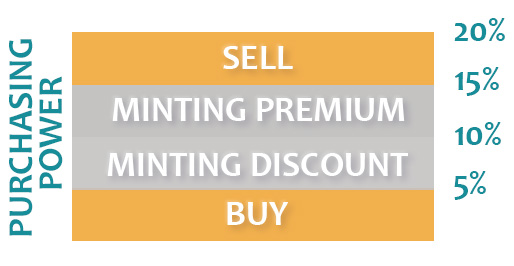
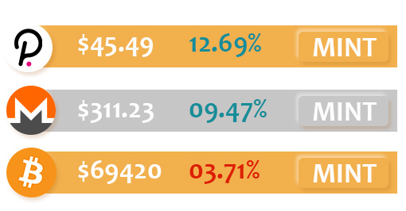
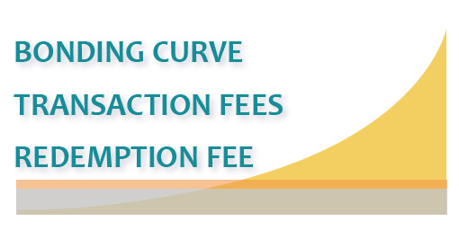

SMART REBALANCING
The smart rebalancing algorithm uses a +/-5% corridor to offer a spread on minting assets in the Basket fund.

Smart Arbitrage
The rebalancing algorithm's priority is first to offer a discount or charge a premium on minting, then purchases followed by sales to bring the fund into tolerance.

Bonding Curve
The smart rebalancing, liquidity rewards, network fees and redemption accruals result in an accelerated bonding curve. This expands the basket fund and adds value to the Picnic Network